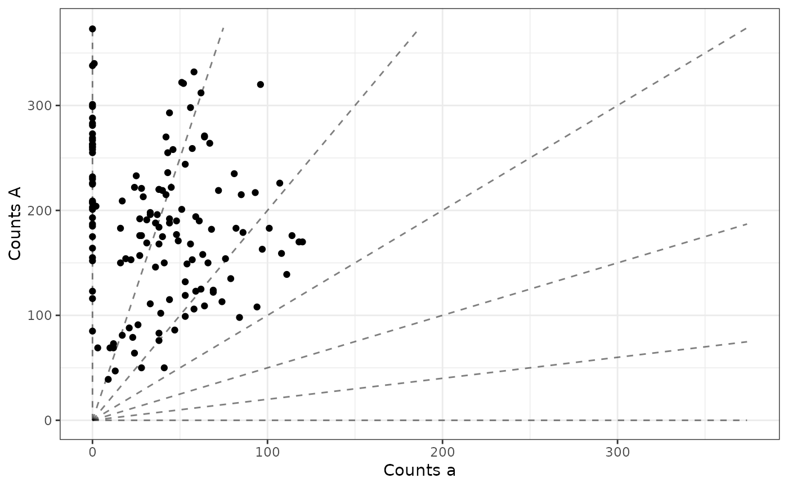

The x-axis is the counts of the non-reference allele,
and the y-axis is the counts of the reference allele.
Transparency is controlled by the maxpostprob
vector. These types of plots are used in Gerard et. al. (2018) and
Gerard and Ferrão (2020).
plot_geno( refvec, sizevec, ploidy, p1ref = NULL, p1size = NULL, p2ref = NULL, p2size = NULL, geno = NULL, seq = 0, bias = 1, maxpostprob = NULL, p1geno = NULL, p2geno = NULL, use_colorblind = TRUE )
| refvec | A vector of non-negative integers. The number of reference reads observed in the individuals |
|---|---|
| sizevec | A vector of positive integers. The total number of reads in the individuals. |
| ploidy | A non-negative integer. The ploidy of the species. |
| p1ref | A vector of non-negative integers. The number of reference reads observed in parent 1 (if the individuals are all siblings). |
| p1size | A vector of positive integers. The total number of reads in parent 1 (if the individuals are all siblings). |
| p2ref | A vector of non-negative integers. The number of reference reads observed in parent 2 (if the individuals are all siblings). |
| p2size | A vector of positive integers. The total number of reads in parent 2 (if the individuals are all siblings). |
| geno | The individual genotypes. |
| seq | The sequencing error rate. |
| bias | The bias parameter. |
| maxpostprob | A vector of the posterior probabilities of being at the modal genotype. |
| p1geno | Parent 1's genotype. |
| p2geno | Parent 2's genotype. |
| use_colorblind | A logical. Should we use a colorblind safe palette ( |
A ggplot object for the genotype plot.
If parental genotypes are provided (p1geno and p2geno) then
they will be colored the same as the offspring. Since they are often hard to see,
a small black dot will also indicate their position.
Gerard, D., Ferrão, L. F. V., Garcia, A. A. F., & Stephens, M. (2018). Genotyping Polyploids from Messy Sequencing Data. Genetics, 210(3), 789-807. doi: 10.1534/genetics.118.301468 .
Gerard, David, and Luís Felipe Ventorim Ferrão. "Priors for genotyping polyploids." Bioinformatics 36, no. 6 (2020): 1795-1800. doi: 10.1093/bioinformatics/btz852 .
David Gerard
data("snpdat") refvec <- snpdat$counts[snpdat$snp == "SNP1"] sizevec <- snpdat$size[snpdat$snp == "SNP1"] ploidy <- 6 plot_geno(refvec = refvec, sizevec = sizevec, ploidy = ploidy)